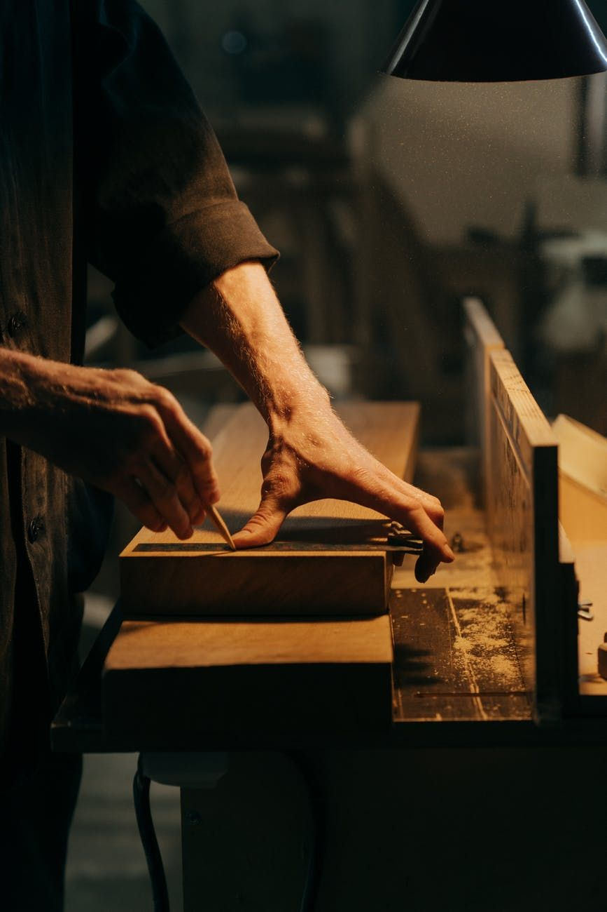
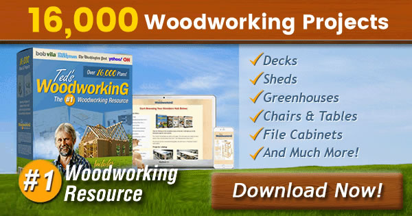

Ted’s Woodworking Plans Review
If you enjoy woodworking or want to start building furniture and projects at home, you may have already heard about Ted’s Woodworking Plans. But does it really work? Let’s take an honest look.

View ReviewWhat Is Ted’s Woodworking?
Ted’s Woodworking is a complete collection of over 16,000 step-by-step woodworking plans. The projects are designed for beginners, hobbyists, and even experienced woodworkers.

What You Get Inside
- ✔ 16,000+ detailed woodworking plans
- ✔ Step-by-step instructions
- ✔ Clear diagrams and measurements
- ✔ Projects for home, garden, and furniture
- ✔ Suitable for beginners and pros
Who Is This For?
This program is ideal if you want to build furniture yourself, save money, or even create projects to sell. No advanced tools or previous experience are required.

View ReviewDisclaimer: This site contains affiliate links. If you purchase through them, we may earn a commission at no additional cost to you.